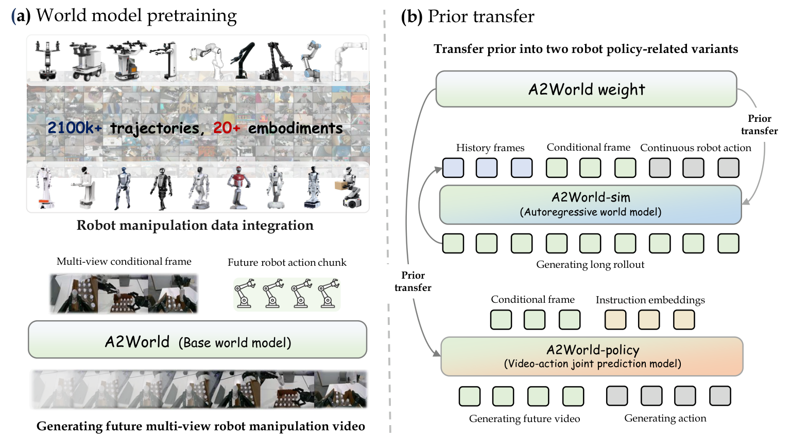
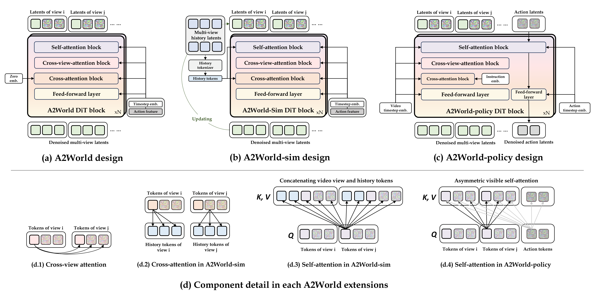

Flip small box
Reorientation under contact-rich manipulation.
world rolloutOOD dynamics
A2World pretrains action-conditioned multi-view world models on large-scale robot manipulation trajectories, then transfers the learned dynamics prior to simulation rollouts and instruction-conditioned control.
Overview
A2World learns how robot actions drive visual scene evolution. Instead of treating video generation as an isolated rendering task, it uses action-conditioned future prediction to build a dynamics prior that can be reused by both simulator-centric and policy-centric robot learning.

Method
A2World starts from action-to-video world model pretraining, then adapts the same prior into a simulator and a policy. The shared representation connects visual rollout quality with downstream robot behavior.

Predicts future multi-view manipulation videos from initial observations and future action chunks.
Uses pose-guided history and autoregressive rollout to replace expensive real-robot evaluation.
Performs joint video-action diffusion for instruction-conditioned real-robot execution.
World Model Rollouts
These videos show A2World world model rollouts on real-robot manipulation scenarios. They are predictions of future interaction dynamics, not direct camera recordings of policy execution.
Reorientation under contact-rich manipulation.
Precision alignment and insertion dynamics.
Longer-horizon object lifting and transport.
Deformable-object handling with container interaction.
Interactive switch manipulation with small contact changes.
A2World-policy
A2World-policy is evaluated on a Flexiv dual-arm suite. These clips show real executions on the same task families used to stress precision, contact, object lifting, switch interaction, and deformable-object handling.
Deformable-object handling in a real execution.
Small-contact switching with a dual-arm platform.
Object reorientation with contact-rich dynamics.
Precision insertion under visual and instruction conditioning.
Object lifting with visible progress toward the target state.
Citation
If this project is useful for your research, please cite the paper, in Proceedings of ECCV 2026.
@inproceedings{huang2026a2world,
title={Learning Transferable Dynamics Priors from Action to World Modeling},
author={Huang, Ze and Zhang, Jiahui and Liu, Hairuo and Zhang, Chenxi and Cheng, Ran and Zhang, Li},
booktitle={Proceedings of the European Conference on Computer Vision (ECCV)},
year={2026},
}